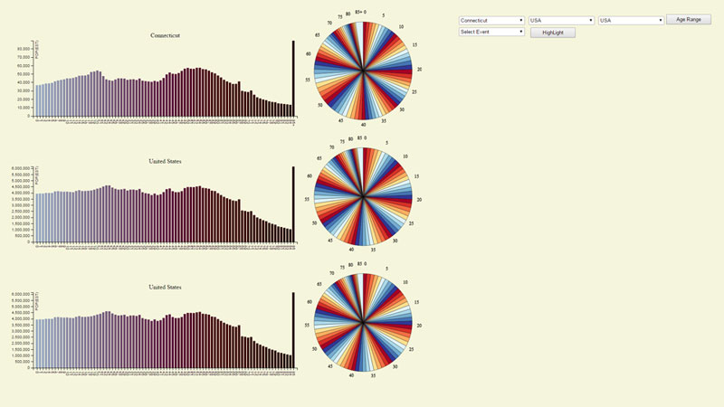
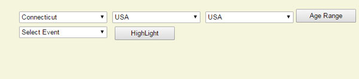
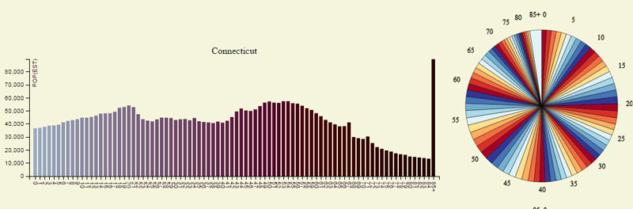

How To Use

The above picture is what you would see when you load up my app for the
first time. The app is made up of three different sections that hold a pie chart and bar graph. When you first load it will show data from the entire United States as a starting put.
On the left you will see the user interface to change the values and settings on the graph. I will go over what each of these buttons do on the graph.

This is the image of the user interface which will allow you to change settings on the
graph. It shows three buttons to select different states and the United States as whole. After these three sets of buttons there is button to change the range of values on the graph. So
you can choose show all 85 age group or do group of them in 10 year ranges. The last set of buttons deal with show what amount of people consious during certain events that I have selected.
One button allows you to select the event which is the on the bottom left and one on the bottom right allows you to trigger the graphs to highlight those events.

This shows what the graphs look like by default when you first load up the page.
The page has three sets of a bar graph and pie graph.
Data
The data that I used came US census data site which is this this site here.
I first grabbed the data from the US census website and then processed it using python.
- I created a script that I used filter out the data that I needed to complete the project.
I used the script that created grab certain sections of the csv file that I had.
- In US census data I only grabbed the 2014 census data since that was latest one in the table.
From there I separated out the data with the total ages for each age group. Separating out the
data for only male or female.
- I ended up with two different filter data sites for this project. First filter data set was
file with census data from all the states including total US population data.
- Second filter data set I created by grouping all the age groups in 10 year ranges.
This file included the population data, age ranges, and names of the individual states.
- The process of creating these file took some time since I never used python to process data before.
I always wanted to use python so this was great learning experience on how to process data using it.
One of the best thing about python is that it has a built in CSV reader and writer that help me a lot.
How to Install and Run
The app uses javascript so just make sure that you have javascript installed. Just click on this link
and you be able to run it.To grab the source code for my project go to this website source Code.
If your not able to get the source code that gave to run on your machine try a web editor, I ended using webstorm to make this site. To get webstorm go to this
link